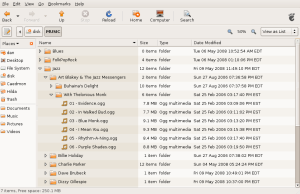

Unlocking the Samsung YP-K3J for use with as a USB Mass Storage Device with OGG Vorbis Support
Posted: May 04, 2008 16:05;
Last Modified: Apr 06, 2009 11:04
Keywords:
Note 1: Since the middle of September 2008, there have been mixed reports as to the success of this method: some people have reported having trouble, others a flawless experience (see the comments at the end of this page—and please report your experience so others can get a sense of the likelihood of success). I don’t know why this is—it could be that Samsung has changed something on the device in some markets to stop people from reflashing the firmware, for example. Once again: if you try this out, please report your results below so others can gauge how likely they are to have success.
Note 2: Although the instructions below indicate that you can only use tcctools with Windows, the author of tcctools indicates that the utility can be compiled with Linux… meaning you may not even need a windows machine (see comment 21).
Note 3: Please remember that as with all such posting on the web, I am simply sharing what worked for me. I gathered this information from other sites and posted it as a mnemonic for myself. Others are free to use it and initially nobody seemed to have anything other than my flawless experience. Recently some people have been reporting trouble. Since Samsung have tried in the past to make the firmware difficult to change, it is always possible that they might try again in the future. Whenever you try to hack an electronic device you need to be prepared to accept the risk that you might wreck things as well. You should never try to hack something if you are not prepared to accept failure.
I’m getting tired of flying on Air Canada and discovering that the on-board sound system is broken. So I went out and bought myself an digital audio (i.e. MP3) player.
I am a Linux user and as a result have a moderately large number of ripped CDs encoded using the open source OGG Vorbis standard, rather than the proprietary MP3 format. In looking for an audio player, therefore, I needed one that could play the open source standard alongside MP3s. And be used with a non-Windows operating system.
After a little research at the Vorbis site and at the site for my local electronic retailer, I settled on the Samsung YP-K3JAB (4GB). According the retailer specs, this was supposed to play Vorbis format files. And while the specs suggested it might only be compatible with Windows operating systems, it is actually pretty rare to find a peripheral that really only works with Windows. Somebody has always created a workaround.
Compatibility Problems
When I got the player home, I was disappointed to make a couple of discoveries:
- Despite what the retailer’s spec sheet indicates, the Canadian version of the player could only handle MP3 and WMA (Windows Media) file formats.
- Support for MTP in Linux is pretty poor: while Rhythm box can import from MTP devices, it can’t write to them, meaning it was next to impossible to get my music onto the device without going through Windows.
Why the K3 doesn’t work as advertised
After some further research, I discovered both the problem and the solution. It turns out that Samsung ships two or three versions of the firmware that accompanies the K3
- a 1.xxx/3.xxx series firmware that plays only MP3/WMA formats and uses the MTP protocol that restricts the device for use with Windows
- a 4xxx series firmware that plays Vorbis as well a MP3/WMA and allows the device to function as a standard UMS (Flash Memory) device and work with all operating systems.
The 1.xxx/.3xxx series firmware is shipped with the K3 everywhere except Korea, where the 4.xxx series is used.
As an added complication, the most recent version of the 3.xxx series firmware (3.09) is designed to stop users from switching to the 4.xxx firmware. And my version of the K3 had the 3.09 firmware.
The solution
Please see the warnings above and the comments at the bottom. As with any hack, there is a chance that you will not succeed and that your machine will become useless. Do not attempt this if you are not prepared to accept failure!
I found a solution to the problem at anythingbutipod.com. The relevant thread is http://www.anythingbutipod.com/forum/showthread.php?t=26947 (see also http://www.anythingbutipod.com/forum/showthread.php?t=14516 for earlier discussion).
 The instructions were very clear and the patching worked exactly as claimed. The only problem was that I couldn’t find a copy of the 4.10 firmware and couldn’t find a manual copy of the 4.0 firmware. Since this required some modification of the instructions, I thought I’d post the version that worked for me here:
Materials
To patch your K3 from the 3.xx series to the 4.xx series, you will need the following material. Because the recovery driver tcctool is a windows executable, you will also need to use a windows box initially (see comment 21 below for information on how to get a linux version of tcctool).
- tcctool-win32.zip from Rockbox
- Copies of the 4.xxx series firmware (at least version 4.03). Links to these seem to come and go. Here’s what I used:
(Note: If you know somebody who has a South Korean Identity number, you can access the latest firmware directly from http://www.yepp.co.kr/. The ID number is necessary for signing in).
Instructions
Please see the warnings above and the comments at the bottom. As with any hack, there is a chance that you will not succeed and that your machine will become useless. Do not attempt this if you are not prepared to accept failure!
- On a windows computer, extract
tcctool-win32.zipto a new folder on your Desktop - On a windows computer, add the new tcctools directory to your path, or, copy the file
tcctool.exefrom the new directory toc:\windows\system32\. - On a windows computer, extract the 4.03 firmware to a directory on your desktop
- On a windows computer, copy the files
YPK3.romandYPK3.IMGto your root directory (c:\) - On a windows computer, plug the K3 into the computer via the USB cable
- Set your K3 to Recovery Mode
- Slide the power button down (in the direction opposite the arrow) as if you were turning the K3 on.
- While holding the power button in the on position, use a paperclip or tooth pick to press the reset button on the back of the K3.
- You will hear (and see) Windows recognise the K3 as a new hardware device.
- On a windows computer, in the New Hardware window choose manual installation of drivers (depending on your system this may involve several steps).
- On a windows computer, when you are allowed to browse for drivers, browse to the tcctool folder you just extracted to your desktop. When an .inf file is selected, click next. This installs the tcctool drivers on your k3.
- Boot the K3 in recovery mode using the new firmware by running the following command from the command line (Start>Run):
tcctool -d ypk3 c:\YPK3.rom - You will see the Samsung Logo and the K3 will indicate that it is installing the necessary firmware and disk image. Since February 2009, many people have been reporting that the device hangs irrecoverably at this point. See the comments below and be warned!.
- On a windows computer, using Windows Explorer, locate and open the K3’s disc. Format the disk as FAT32 if you are asked and accept all defaults.
- On a windows computer, once your K3 is formatted, use Windows Explorer to copy the 4.03 firmware you stored in
c:\to the root (i.e. top level) folder of your K3. - Set your K3 into recovery mode again by holding the on-switch and pressing reset.
- On a windows computer, boot the device again using from Start/run using the command
tcctool -d ypk3 c:\YPK3.rom. - Important: On the screen of your K3 you will see a ball and then the Samsung Logo. Pull out the USB cable from your K3 as soon as the Samsung Logo appears.
- If you were able to do this, the K3 will permanently install the new firmware. If you are too late pulling the USB cable, you’ll need to start all over again.
- Once the K3 has installed the new firmware, it will turn off. You can now update the firmware to later versions of the 4.xx series using the windows executables supplied by Samsung.
- Your K3 is now a USB Mass Storage Device that can be connected to computers running any operating system just like any other flash drive: you can add new music files to it by dragging and dropping them on the K3’s music folder; and you can now play your VORBIS files. As added bonuses, you have a better EQ utility on your K3 and an additional text file viewer.

Comment [87]
Bruce (Sat May 24, 2008 (21:13:04)) [PermLink]: Thanks,
I corrupted my yp-k3 whislt trying to flash it previously. I couldn’t get windows to recognise it until I used the tcctool drivers. Then I followed your instructions and it’s working.Thanks again.
Jonah (Sun Jul 6, 2008 (23:38:44)) [PermLink]: thanks!
it worked perfectly for me too.
i think ill try it again with a new colour =D(Tue Jul 22, 2008 (16:29:57)) [PermLink]: Thanks!
somehow the player wasnt recognised with the original firmware. (didn`t boot / charge etc)
thanks to your guide the player works.Eli (Fri Jul 25, 2008 (14:22:22)) [PermLink]: Thank you soo much! I’ve trying to update my firmware ever since I’ve got my yP-K3 and I finally did!!! Thank you very much.
Framer (Wed Aug 6, 2008 (04:19:21)) [PermLink]: Hallo Daniel Paul.
I have some questions for you.
1. After upgrade to firmware 4.03 do you have work FM radio ?
I flash my yp-k3jab/xee from 3.05 to 4.10 and FM Radio was lost :(
2. What type of 4.03 firm ware do you use ?dan (Thu Aug 7, 2008 (14:52:48)) [PermLink]: 1. Yes, I have FM Radio. As far as I can tell nothing is broken on my machine (I’ve not tried the picture gallery, though it claims it is there), and I acquired a new utility, “Text.” But remember, I went from 4.03 right through to 4.06.
2. I used the 4.03 firmware at the URL listed above. http://www.yepp.co.kr/support/support_file_down_sms.jsp?pds_num=1665&seq_num=1
happy (Tue Aug 19, 2008 (07:40:12)) [PermLink]: You’re a champ! I made the same assumption as you when I bought the device – there’d be a way around the MTP issue… and whaddya know – you’re it! :) Cheers mate.
MJ (Tue Sep 2, 2008 (05:10:56)) [PermLink]: Ya man! thanks a lot.
at long last i can use my mp3 player with my linux OS….have a nice day.
Paul (Mon Sep 15, 2008 (10:16:56)) [PermLink]: Hi, I followed all the steps but, tho is working, the screen turns to white and can only move through the menus by my imagination. Windows is now not allowing me to start the procedure again, does not recognize the device as USB and do not allow new formating. What can I do? I normally use Linux (Ubuntu), but the device is not visible in Linux
dan (Mon Sep 15, 2008 (10:38:30)) [PermLink]: I don’t know the answer to this. When I did my research on the issue, the only problems people reported were missing pulling the plug out as it rebooted. And the answer to that was to repeat the steps. All examples of even quite bricked devices seemed to restore from repeating.
The fact that windows is not seeing it as USB and that it isn’t working in linux means that it has not been turned into a mass storage device, AFAIK. Is it being recognised as an MP3 player? Also what firmware did you start with and do you now have?
Nogg (Mon Sep 15, 2008 (15:30:35)) [PermLink]: well done and thanks a lot!
had to reboot a few times but now works a treat under linuxso happy now, and many thanks again
Paul (Tue Sep 16, 2008 (16:01:50)) [PermLink]: Dan,
Many thanks for your help. Yes, it works as an MP3 and can use the radio as well. For sure I have done something wrong, but I followed the steps and cannot figure out what was wrong. Bad luck I seem to be the only one messing up the devicedan (Wed Sep 17, 2008 (17:40:08)) [PermLink]: I looked around again. People who had players that weren’t recognised by windows ‘as is’ (either before or after) seem to have been able to get things going again using the TCTools utilities. Have you tried starting at step 0 again and using it?
Otherwise, and I wish I could help more, I don’t know the answer.
Paul (Sat Sep 20, 2008 (15:19:32)) [PermLink]: I think the first problem comes from the driver that is not allowing windows to format and start again. How can I get rid of this without reinstalling windows?
dan (Sat Sep 20, 2008 (16:37:22)) [PermLink]: Don’t know. If you mean the Samsung driver, then I think it is TCCTools you need to start with again. But if the issue is with TCCTools, then I don’t know at all, since I just downloaded and used it.
Paul (Sun Sep 21, 2008 (07:00:32)) [PermLink]: Many thanks for your help. If I finally solve will post the tips.
Francois (Thu Oct 2, 2008 (21:34:57)) [PermLink]: To Paul: exact same problem here, white screen after doing all the steps. If/when you have figured it out, I’ll be very interested in your solution. I’ll post if I find one too. Cheers.
dan (Fri Oct 3, 2008 (10:16:24)) [PermLink]: Could there be a new firmware version? What version did you have, Paul and Francois? Are they new devices? Could there be a geographical difference?
Paul (Fri Oct 3, 2008 (15:12:32)) [PermLink]: Hi Dan. I have been lucky: bored of been unable to solve the problem, I went to the dealer and after trying to update the software without success he decided to replace my K3 without asking! Firmware is 3.09 WA JN. Well, if someone discloses what is going on and how to solve it, I may try again.
dan (Fri Oct 3, 2008 (15:19:18)) [PermLink]: Really too bad that you and François had this problem: when it is changed over to the OGG-compatible firmware, it is a wonderful machine.
linuxstb (Sat Oct 4, 2008 (17:06:07)) [PermLink]: Hi. I’m the author of tcctool and glad you’ve found an unintended use for it – it was written to help port the Rockbox open source firmware to devices using the same CPU as your Samsung.
tcctool works fine in Linux (and anywhere else libusb runs, including OS X), you just need to download and compile the source yourself – available via the Rockbox svn repository (in utils/tcctool/).
See http://www.rockbox.org for more info about Rockbox.
To checkout and compile the tcctool source, do:
svn co svn://svn.rockbox.org/rockbox/trunk/utils/tcctool tcctool
cd tcctool
makeYou need libusb (and headers – i.e. the libusb-dev package) installed.
Francois (Sun Oct 5, 2008 (01:07:15)) [PermLink]: My firmware was 3.05, and I bought the machine in Australia. I’ll go back to the dealer too and hope for the best. In any case, many thanks for your initiative Dan, I’m sure I’ll find a way to make it work somehow. Cheers.
Me (Sun Oct 5, 2008 (16:09:54)) [PermLink]: This didn’t work, and Saboo’s formula was poorly explained. His only solution was to re-read the instructions. Someone please offer a third alternative, because I’ve tried these about 5 times and got nothing but bullshit. Thanks.
Note: I edited a vulgarism in this posting because it seemed to be attracting the comment-spammers to the page.
dan (Sun Oct 5, 2008 (16:13:51)) [PermLink]: I’m thankful Saboo posted at all (my instructions are just a precis of his). And I’m afraid that’s the way things go if you start hacking hardware: there’s no guarantees and people are simply sharing what worked for them. Sound like your real beef is with Samsung… the guys who disabled features on the device.
I’m beginning to think that Samsung has changed something in the last month to month and a half.
mrme (Sun Oct 5, 2008 (17:32:55)) [PermLink]: I followed the instructions and it worked fine for me on yesterday October 5th, 2008. I upgraded from 3.09 successfully, Thanks.
Ian (Wed Oct 29, 2008 (01:58:13)) [PermLink]: Great advice – worked first time on a YP-K3JQB (UK).
Thanksflo (Wed Oct 29, 2008 (04:31:55)) [PermLink]: i’ve tried the method,but after that the player shows me on the screen when i turn off CHARGING,what should i do?
dan (Wed Oct 29, 2008 (10:54:09)) [PermLink]: I don’t quite understand (do you mean the “on screen”)? But I also confess I don’t know. The extent of my knowledge of this goes no farther than the contents of the page and comments.
catalin (Wed Oct 29, 2008 (14:12:16)) [PermLink]: when I use in start>run the command tcctool -d ypk3 c:\YPK3.rom it opens a folder and that’s all. it doesn’t boot my ypk3.
flo (Thu Oct 30, 2008 (03:20:14)) [PermLink]: i mean after i turn off the player,it appears on the screen “charging” and it;s stay that way.I turn on the player it’s ok,i turn off the same “charging”.
oliver (Sun Dec 14, 2008 (06:43:02)) [PermLink]: I’ve found an easy way just put it in recovery mode and then do steps 7&8 ,drag and drop the firmware in the unplug it and plug it back in format it then drag and drop the firmware in there u have it the easy way 2 do it
pap (Tue Dec 16, 2008 (02:42:01)) [PermLink]: Worked like a charm. Thank you!
Joch (Sat Dec 27, 2008 (22:56:16)) [PermLink]: Well thanks work very well for me
cindy (Sun Dec 28, 2008 (11:10:08)) [PermLink]: Can you help me? The Samsung won’t hold a charge. It says charging, but then I unplug and not charged. Help!!!!! Thank you
dan (Sun Dec 28, 2008 (22:34:32)) [PermLink]: Sorry. Don’t know anything about that.
Callum (Tue Dec 30, 2009 (03:05:55)) [PermLink]: Nice tut. I tried it and after I pulled out the usb in the final stage (before the logo comes on) it says “not enough DB. please delete more than 18 mb” or something like that o_O. i dont understand. where is the problem, there 3.5gb of free space on it. o and another thing, when I try to start over again (step 7), my windows box either doesnt recognize the device or installs driver anyway on in making it impossible for me to chose the directory to install the driver. I tried uninstalling and installing but it said “cant find drivers that are latest then the ones that are already install” or something along the lines. Anyway sorry for the babbling, nice tut. I hope it had worked for me, but i still wont give up I’ll try again until i succeed
JB (Fri Jan 16, 2009 (14:16:03)) [PermLink]: I just tried it on my year old YP-K3 with v. 3.09 originally installed. v4.06 now works perfectly fine! I’m Canadian as well :)
Fabio (Tue Feb 10, 2009 (21:26:30)) [PermLink]: Thanks a lot!! Works great for me. But the mp3player doesn’t have the music library feature anymore :( That sucks :(
Kisama (Mon Feb 23, 2009 (17:59:42)) [PermLink]: Anyone figured out the steps involved for a non-windows system (ie Fedora)?
dan (Mon Feb 23, 2009 (20:59:05)) [PermLink]: See note #2 and Comment 21. I’ve not tried implementing it, but the TCTools is supposed to be platform independent.
Haruki (Sat Feb 28, 2009 (17:51:30)) [PermLink]: I can’t seem to pull the plug out at the right time… This is the only problem I’m having with your method. I pull the plug out, and it’s stuck to where the Samsung logo and the blue ball become one (i can’t explain it any other way) Please help?
petter (Sun Mar 1, 2009 (04:58:50)) [PermLink]: Thanks for your great job first. But: your recipe worked fine until step 10. I can see the logo but instead of instlling anything the system hangs. It´s an K3JQB (2GB) bought in Germany. Does memory size matter? Any idea? :o(
dan (Tue Mar 3, 2009 (10:54:14)) [PermLink]: Sorry Haruki and Petter. I don’t know the answer to either of your questions :-(
gabi (Tue Mar 10, 2009 (14:20:45)) [PermLink]: I try this metod…and now my mp3 doesen`t start ..I didn`t pull the cable …and this metod doese`nt work for 2 times..pls I NEED HELP
joe (Thu Mar 12, 2009 (10:48:37)) [PermLink]: hey my yp-k3 player keeps saying that i have “no files” whenever i wanna access pictures music or text. but when i go on the comp there is clearly songs and pictures and stuff stored inside. any way to fix this?
thnks.
alex (Mon Apr 6, 2009 (01:40:35)) [PermLink]: ...so i did this and the player froze on “transferring files” in step 10. After 5 hours i finally unplugged it. Now when i try to repeat the steps, windows wont recognize the fact the new hardware or anything.. and my mp3 player starts with a white screen. Please help! (R3ssurection@gmail.com or xxsolitudexx143[yahoo])
dan (Mon Apr 6, 2009 (11:46:47)) [PermLink]: Hey Alex, sorry to hear about it. People seem to be having really mixed results for the last six months to a year, which is when I started adding the warnings. I don’t what the issue is: with me, I did mess it up once, but I was able to redo it all without any problems. Some people report that they can, other report that things brick. I’ve no idea if it is different interpretations of the instructions here or different firmware floating around.
Let us know here if you find an answer.
dan (Mon Apr 6, 2009 (11:55:05)) [PermLink]: Actually, Alex, as I was adding additional wrnings I just thought of something: did you try going on to step 11? It has been a long time since I reflashed by own device, but I don’t say that you are to wait for something to end at step 10, only that it starts moving the stuff over. Maybe if you go on to step 11 and open the device up in your windows machine, you can continue?
Just a guess. Since many people are hanging here and yet others are making it through, I wonder if the distinction is that some just move on to step 11 and others get stuck waiting for step 10 to stop. This is not a claim or a guarantee that going on will solve things. Everybody using these instructions is doing so at their own risk.
TN (Wed Apr 15, 2009 (02:14:15)) [PermLink]: ..Awsome!...
I bricked my yp-k3 and was about to give up!. But luckily I found this! ..Oddly instead of using firmware 4.03 (as in your guide) I used 4.10 that’s right FOUR POINT ONE ZERO (4.10) and it fully installed it (4.10) without having to do a second firmware upgrade!. worked Like a charm. I wonder if people that are having a hard time upgrading, have newerly built YPK3’s , mine’s made in 2007/07 (check the back lower sticker), and firmware 3.xx (xx can’t remember now) maybe the 2008-2009’s have protection…?..If this doesn’t work for them.?All-and-all Thank you for sharing this with us, your damn SMART! :)...You Canadians are smart, that must make me smart too. ;)
TN (Wed Apr 15, 2009 (02:29:23)) [PermLink]: Forgot to ask if I should remove Tcctool form system 32 after installation or is it ok to be left in there? (won’t interfere with anything right?)
dan (Wed Apr 15, 2009 (12:24:55)) [PermLink]: I’m glad it worked TN. That’s a good point about checking the date of the machine.
I can’t imagine TCTools does anything to the windows machine.
TN (Thu Apr 16, 2009 (03:46:00)) [PermLink]: I’ve just recently add photos to my K3 and the pictures look off color (alittle more bluish)..is that normal?, anyone else have that problem?..it’s not the firmware is it?
I even used the Samsung Media Studio 5 to transfer them to my K3 and still they looked off color. I cleaned off my screen and still…Any answers?
Russ Herald (Sat May 30, 2009 (13:13:35)) [PermLink]: Just used your advice to upgrade my daughter’s K3, which has become totally unusable. Many thanks!
By the way, I was also able to upgrade straight to 4.10.dan (Tue Jun 2, 2009 (08:35:41)) [PermLink]: Hi Russ, I hope you mean that you managed to rescue a wrecked K3 rather than wreck your daughter’s working one—I wouldn’t want to be responsible for what happened to a father who destroyed his duaghters MP3 player!
Roger (Thu Jun 4, 2009 (01:01:17)) [PermLink]: Hey I’m stuck please help!
I don’t know where to get the YPK3.rom and image! Tried samsung sites and stuff but those are korean and I can’t surf through it.
Pleaes give direct links to these files (upload if you can). Rapidshare would be good.
But so far soo good i just need those files.
Thanks!
Pal (Tue Jun 9, 2009 (03:26:24)) [PermLink]: I used this technique to upgrade my 2007 built YP k3. worked like a charm. Thanks.
I think new version of the hardware are ones who face trouble. Or simply not following instructions.
dan (Fri Jun 12, 2009 (09:08:44)) [PermLink]: Hi Roger, I wouldn’t have copies of the files: I used an old windows computer that has since been reformatted and single boots linux. I remember that they were hard to find, but I got them by googling around I think.
dan (Fri Jun 12, 2009 (09:11:46)) [PermLink]: Hi Pal,
I don’t want to say that people aren’t following the instructions correctly, though they are very finicky, and, given the mixed results, that may explain things.
But it is also quite possible that Samsung is not sending identical firmware/hardware versions to all the markets.
Either way, it is clear that it doesn’t always work—either because the instructions are such that not everybody can follow them or because the machines are different sometimes.
There’s been less trouble since I added the big yellow and red warnings!
Pal (Sun Jun 14, 2009 (10:14:32)) [PermLink]: Roger,
Try anythingbutipod forums dan gave credits to. They have a sticky thread with all firmwares. I am not sure if I am allowed to post links. So just look it up
Paul (Mon Jul 13, 2009 (06:54:14)) [PermLink]: Огромное человеческое спасибо.
Thanks a lot!! It’s works.dan (Wed Jul 15, 2009 (00:59:11)) [PermLink]: Good thing Огромное человеческое спасибо doesn’t mean something obscene!
levy (Thu Jul 23, 2009 (14:40:39)) [PermLink]: I can’t even get the thing into recovery mode. Hold the power switch and press reset. Simple. Except I’ve done it literally 100 times now. It just keeps resetting in MTP mode. I must be retarded.
Samsung unlocking (Mon Jul 27, 2009 (03:02:59)) [PermLink]: Hi,
Well every function is clear in Samsung mobile phone that every can be perform its task well and can be safe from misuse.mx (Wed Aug 26, 2009 (17:47:40)) [PermLink]: THANK. YOU. SO MUCH. you rock.
Kam (Fri Aug 28, 2009 (03:57:39)) [PermLink]: I can’t thank you enough! When i used a different guide it kept showing up with a white screen. But when i saw this it was like an angel had given me a chance! This was done 28th August 2009!
Julio (Sun Sep 20, 2009 (15:53:09)) [PermLink]: thanks!
it worked perfectly for me too this technique to upgrade my 2007 built YP k3. From Spain THANKGabor (Mon Nov 16, 2009 (11:01:42)) [PermLink]: Hello!
Please somebody upload the 4.03 firmware somewhere, becouse i can’t download it! I think that site don’t like my ip region! Please help! Thanx
Gabor (Tue Nov 17, 2009 (05:38:58)) [PermLink]: it works! thank you for the tutorial!
Frank (Sat Dec 5, 2009 (06:19:02)) [PermLink]: I have a k3 that I bought in the UK, model no. JQB. I mistakenly upgraded the firmware to version 4.1 for the QB and this doesn’t find the play lists I save. I tried this method to get back to version 3.09 of the firmware but I get an error message that image file is the wrong size.
Clayton (Mon Dec 14, 2009 (13:54:11)) [PermLink]: Worked a charm thanks a bunch. I had a white screen and now it is fixed I am jumping for joy (literally)
Clayton (Mon Dec 14, 2009 (13:56:09)) [PermLink]: Here is a link to the 4.10 firmware
http://org.downloadcenter.samsung.com/downloadfile/ContentsFile.aspx?CDSite=sg&CttFileID=1476388&CDCttType=FM&ModelType=N&ModelName=YP-K3QB&VPath=FM/200712/20071210144103718_YP_K3_4_10_MSC_WA.zip
Hope it works for u guys
(Thu Jan 14, 2010 (18:45:47)) [PermLink]: mine got bricked doing this, i followed each step and now after the samsung logo it just has a blue screen. any way out of this or is it gone forever?
(Thu Jan 14, 2010 (18:49:42)) [PermLink]: also i get this error:
A service installation section in this INF is invalid.
dan (Mon Jan 18, 2010 (19:59:33)) [PermLink]: #72 and #73: I also had problems at first; in the end I think it had to do with timing and I ultimately managed to pull the cord correctly—but it was a long time ago.
I honestly don’t know what to make of the mixed success people have been having. I confess I suspect that the differential is how clear my instructions have appeared to the reader—perhaps my writing style is easier to understand for some people than others. But it could also be that there are different models out there or that Samsung has changed something somewhere.
It’s not helpful, I know, but this is why the article is so heavily labelled with warning statements. It is clear that some people end up wrecking their player: it might be that somebody else could fix it for them; but as far as they are concerned, they aren’t able to use it any more after they try this.
Clearly, this is something you should try only if you can afford to fail.
Could you let us know if you manage to solve the problem?
-dan
P.S.: Have you looked your error message up on Google to see if there are any solutions? Here's the Google search: http://www.google.ca/search?q=A+service+installation+section+in+this+INF+is+invalid
john (Wed Feb 10, 2010 (07:55:53)) [PermLink]: i also have yp-k3jqb, 2gb, german.
the player hang up everytime when i used the 4.03 firmare.
so i tried only with 4.1 (in every step) an worked pefectly!!!!°Juanl (Wed Feb 10, 2010 (14:01:33)) [PermLink]: Y me olvidaba.
My ypk it’s broken, i format all the files and after that it don’t work anymore, but with this tutorial it works again and better.
Yupi!
Sara (Sat Jun 26, 2010 (14:50:21)) [PermLink]: It worked perfectly!!! Thanks a lot!!!
I managed to install firmware version 4.10 downloaded from http://kr.samsungmobile.com.
(Google Chrome can make korean friendly! ;) )sorin (Fri Jul 30, 2010 (15:07:20)) [PermLink]: i accidentally format the yp-k3 to ntfs. is there anything i can do to repair this? thanks
Harun (Mon Aug 30, 2010 (10:06:31)) [PermLink]: sorin: on step 11? no problem, just format again but as fat32, then continue with step 12 etc.
Alex 2 (Mon Sep 6, 2010 (01:20:12)) [PermLink]: hi,
How do you format in fat32?
also i got the’white screen of death’ and now when i charge it it doesn’t show the charging animation.Lucian (Mon Sep 27, 2010 (16:14:23)) [PermLink]: i managed to find out why at point 10. some people have had problems with their player freeze “copying files.don’t unplug“or something like this.I waited a few minutes,and after that i went to device manager in windows and disabled the usb port in use with the player.After you disable,click enable…and voila! your player is recognized by the computer and you can continue with the next step
Tony (Thu Nov 25, 2010 (10:11:34)) [PermLink]: I foolishly tried to upgrade but got “firmware update failed” and now I have nothing but a blank screen. I will try this solution but the firmware update on the Samsung Canada website is only 3.09..where do I get 4.xx?
dan (Wed Dec 1, 2010 (10:41:41)) [PermLink]: Tony, I have some links under the “Materials” section above. These are the ones I used to get the Korean firmware updates; but I don’t know if they are active any more. I think somebody said something about updates in the comments above as well.
Sagun (Thu Dec 1, 2011 (06:51:41)) [PermLink]: The link to download firmware isnt working please provide me a valid link
dan (Wed Jan 11, 2012 (11:02:08)) [PermLink]: Sorry Sagun, that’s all I know. If it is changed, maybe somebody else has the new URL. If you do find it, I’d be very grateful if you let me know so I can post it.
Megan (Sun Sep 20, 2015 (22:41:10)) [PermLink]: Hi guys, why not try this software developed by UnlockBase that uses Unlock by Cable: https://www.unlockbase.com/cable-unlock/ . It’s a new software that is very reliable in terms of cable unlocking. For now, only Samsung phones are supported but its always adding more models. Here’s the link: https://www.unlockbase.com/cable-unlock/unlockbase-software-faq/ for the Software Official FAQ for more details. Have a good day everyone!^^
abaumg (Mon May 21, 2018 (15:13:24)) [PermLink]: Hello Dan,
I just wanted to let you know that I successfully flashed my girlfriend’s YP-K3 thanks to your great instructions